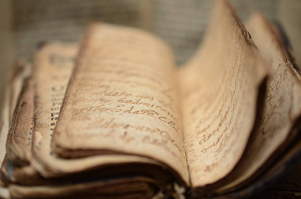

Contirbution in Education

Dayananda Saraswati can be known from his three famous contributions namely “Satyartha Prakash”, ”Veda Bhashya Bhumika” and “Veda Bhashya Bhumika” and Veda Bhashya. Further the journal “Arya Patrika’ edited by him also reflects his thought. Dayandanda has devoted two chapters (2nd and 3rd) of the “Satyarth Prakash” to the subject of education for the infants as well as the adolescents.i Besides establishing his reputation as a prolific writer, above works indicate his role as an educational and religious reformer. Swami Dayananda Saraswati also criticizes the present education system. He said this system failed to deliver. It is not producing good student. An educated person was supposed to be modest and bear good character. He was required to have control over speech and mind, be energetic, respectful to parents, teachers, Elders and guest, to follow the Nobel path and to shun evil ways, to enjoy the company of the learned people and to liberal in making gifts. He wrote booklet called as “Vyavharbhanu”. In this book he delineated the qualities of a pandit learned person who was entitled to teach and contrasted them with the character of a fool who should not to be entrusted with the education of the children. Swami Dayananda is not composed of a superficial knowledge of three of four subjects as unfortunately it happens to be the case at present, but it covers a wide range of subjects beginning with grammar,literature, the Vedas, Upanishads, Ramayana, Mahabharat and Ayurveda, the Science of health; Dhanurveda, the Science of war; Gandharvaveda, Aesthetic arts; Arthaveda, Vocational training, Astronomy, Algebra, Arithmetic, Geology, Space science etc. His was certainly a scheme of broad-based foundational education. As for the medium of education, both of this personality have different idea Dayananda, chose to write his works in the lingua franca of India, which he termed as the Aryabhasha, so that his message could reach the masses. Language, apparently, to him was the medium, the vehicle of communication of knowledge and principles of healthy and Dharmic. Same time he also advocacy of Sanskrit but did not supported the English while Swamiji is put great emphasis on mother tongue is the right medium for social or mass education; he prescribes the learning of English and Sanskrit also. While English is necessary for mastering Western science and technology, Sanskrit leads one into the depths of our vast store of classics. The implication is that if language does not remain the privilege of a small class of people, social unity will March forward unhampered.